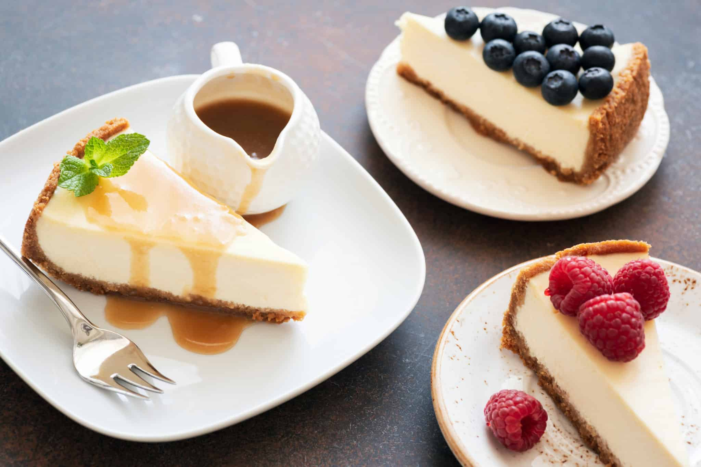

"Unveiling Flavors Through Time: The Epic Saga of CheeseCake!"
Cheesecake has an ancient history, with roots in ancient Greece, where it was served at weddings and used as an offering to Greek gods. The Romans later adopted and spread the recipe. During the Renaissance, cheesecake recipes began to appear in European cookbooks. In the 18th century, the addition of cream cheese led to the modern cheesecake we know today. It gained popularity in the United States in the 20th century and is now a beloved dessert worldwide, available in numerous flavors and styles.
"Bringing CheeseCake to your kitchen"
Here's a classic recipe for a delicious homemade cheesecake:
Elevate Your Dish with Exceptional Ingredients
For the Crust:
- 1 1/2 cups graham cracker crumbs (about 12 graham crackers)
- 1/4 cup granulated sugar
- 1/2 cup unsalted butter, melted
For the Cheesecake Filling:
- 4 packages (8 ounces each) cream cheese, softened
- 1 1/4 cups granulated sugar
- 1 teaspoon vanilla extract
- 4 large eggs
- 2/3 cup sour cream
- 2/3 cup heavy cream
Let's chop, simmer, and sauté our way to gastronomic glory!
Preheat the Oven:
1. Preheat your oven to 325°F (160°C).
Prepare the Crust:
1. In a mixing bowl, combine the graham cracker crumbs, sugar, and melted butter.
2. Press the mixture firmly into the bottom of a 9-inch (23 cm) springform pan to create an even crust.
Prepare the Cheesecake Filling:
1. In a large mixing bowl, beat the softened cream cheese until smooth and creamy.
2. Add the granulated sugar and vanilla extract. Mix until well combined.
3. Add the eggs one at a time, mixing well after each addition.
4. Finally, add the sour cream and heavy cream, and mix until the batter is smooth and all the ingredients are fully incorporated.
Assemble and Bake:
1. Pour the cheesecake filling over the prepared crust in the springform pan.
2. Tap the pan gently on the counter to remove any air bubbles.
Bake:
1. Place the cheesecake in the preheated oven and bake for about 45-50 minutes or until the edges are set, and the center is slightly jiggly.
Cool:
1. Turn off the oven, crack the oven door, and let the cheesecake cool in the oven for about 1 hour. This helps prevent cracking.
2. Afterward, remove the cheesecake from the oven and let it cool to room temperature.
Chill:
1. Once the cheesecake has cooled to room temperature, refrigerate it for at least 4 hours or overnight to firm up and set.
Serve:
1. Before serving, you can add toppings like fresh fruit, fruit preserves, whipped cream, or chocolate sauce, if desired.
2. Slice and serve your homemade cheesecake. Enjoy!
This classic cheesecake is rich, creamy, and wonderfully indulgent. Feel free to get creative with toppings to suit your taste.